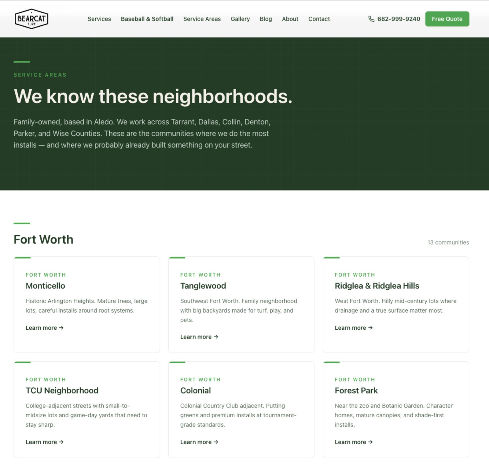
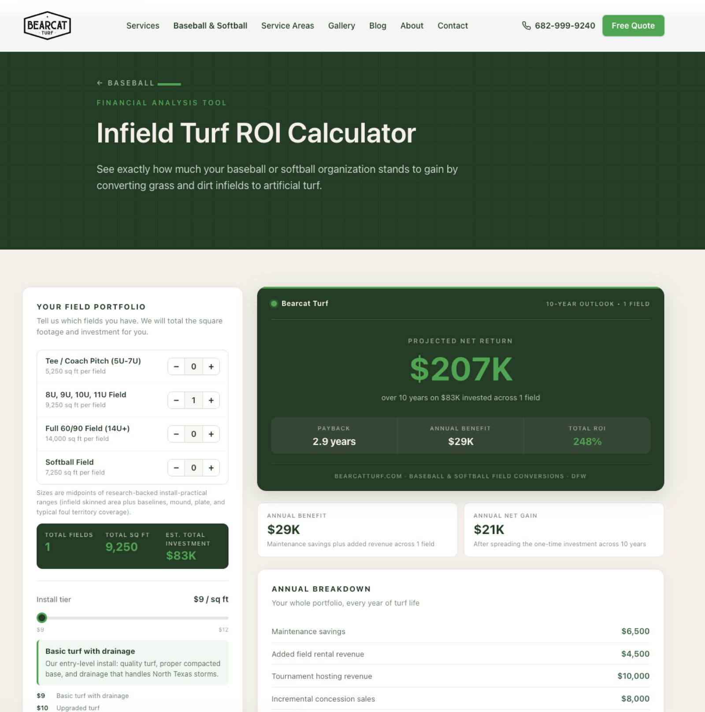
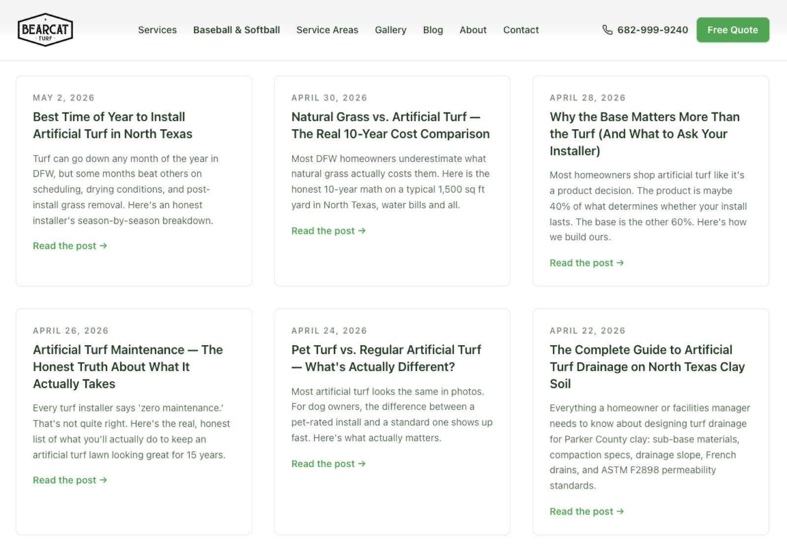

Bearcat Turf & Outdoors
Full website rebuild + ongoing SEO, conversion, and brand work for a family-owned, woman-owned, HUB-certified DFW turf installer. A 186-page custom Astro site running on Cloudflare Workers, with an AI lead qualifier, cost calculator converting at 11.3%, bilingual EN/ES, and server-side conversion tracking across 10 capture surfaces.
Visit the live site — bearcatturf.com →
A 6-figure-install business relying entirely on referrals.
Bearcat Turf & Outdoors is a family-owned, woman-owned, HUB-certified artificial turf installer in Aledo, Texas, serving the Dallas–Fort Worth metroplex. When they came to us, their site was on a templated platform: slow, hard to update, generic copy, no measurable conversion path.
They were doing 6-figure installs by relying entirely on referrals — leaving organic search, paid search, and a real digital sales funnel on the table. They needed a sales tool, not a brochure.
A 186-page custom Astro site with deep integrations across the lead pipeline.
Not a template. A purpose-built sales engine that qualifies leads at intake, prices their project on the spot, surfaces relevant case studies, follows up automatically when they go cold, and writes the first draft of the owner's reply email.
Every inbound lead fans out in parallel to five destinations: customer estimate email, internal Slack/email notification, Quo CRM contact, MailerLite enrollment, and an AI-drafted reply ready for one-click send.
Ten features that compound into a sales pipeline.
11.3% completion-to-lead conversion.
Multi-step, mobile-first, ZIP-gated, with real benchmark pricing by project type and tier. Industry typical: 1–3%. This one converts 4–10× over.
Builds rapport while qualifying budget and scope before the owner spends a minute on the lead.Personalized draft reply in 60 seconds.
Every inbound lead is read by Claude / Gemini. A personalized draft email lands in the owners' inbox ready to send — pulling per-lead context: project type, square footage, urgency, comparison signals.
Time-to-first-touch goes from hours to under a minute, with no template feel.Real-time pricing for backyard + commercial cages.
Live pricing engine for backyard, school, and training-facility cage builds. Cimarron dealer integration. Owners can see margin, the customer sees a defensible number.
Opens a second product line with its own qualified intake.Email-gated PDF analysis for ADs.
Multi-field portfolio model with email-gated PDF analysis for school athletic directors and club programs. Multi-year cost-of-ownership comparison vs. natural grass.
Pulls high-ticket institutional leads that referrals can't reach.Personalized HTML email with 3 matched case studies.
Every cost-calculator submission receives a personalized HTML email 24 hours later with 3 case studies matched to their project type. Built on Resend's scheduled_at — no queue infrastructure needed.
Recovers the leads who almost-converted on first visit.Cmd+K natural-language search across 127 pages.
HuggingFace BGE embeddings, cosine-similarity ranking on every query. Users find "drainage on clay soil" without knowing the exact page title.
Lowers bounce on a site too deep to navigate by menu alone.Full Spanish landing flow, not auto-translated chrome.
Helsinki-NLP translation pipeline, full hreflang wiring, dedicated Spanish landing + contact flows. Spanish-speaking customers get a real experience, not a Google-translated half-effort.
Captures a meaningful slice of DFW that competitors don't speak to.AI-batch-generated with differentiated content.
Each city page is unique — not a templated copy-paste. Neighborhood detail, local schema, its own conversion path. AI-batched but human-reviewed.
Ranking for "pet turf [city]" across the entire DFW metroplex.10 lead-capture surfaces × 4 channels.
Meta Pixel + server-side Conversions API (via Cloudflare Worker), GA4 + GTM, Google Ads conversion tracking — wired into every form. Server-side recovers 30–40% of signal that iOS and Safari strip from browser pixels.
Lower CPL, better lookalikes, honest attribution.One submission, five parallel destinations.
Every form submission fans out: customer estimate email, internal notification, Quo CRM contact, MailerLite enrollment, AI follow-up draft. All logged for durable audit.
Lead never falls through the cracks; ops never bottleneck on triage.A site the size of a SaaS, the speed of a landing page.
- Cloudflare Workers as the application backbone. Every form, every API integration, every redirect lives in a single TypeScript Worker. No backend server, no database hosting bill, sub-50ms cold starts globally.
- Astro SSG + Workers Sites. Entire site statically generated at build time and served from Cloudflare's edge. 186 pages, Tailwind utility classes, full Astro Image pipeline producing responsive WebP variants for every photo (~1,800 image variants at build).
- AI integrations done right — not chatbots. Used for the work that actually moves the needle: alt-text generation (Gemini Vision), brand-voice lead reply drafts (Anthropic Claude), semantic search embeddings (HuggingFace BGE), translation pipelines (Helsinki-NLP), per-city page content (AI-batched).
- Brand redesign mid-engagement. When the client commissioned a new brand identity — typographic wordmark, 7-color palette, 4-font stack, 60+ logo variants — we shipped the full visual migration across 200+ pages, 14 email templates, schema metadata, OG share cards, and favicons in a single coordinated deploy. CSS-variable architecture meant changing one file flipped the entire site's color scheme.
- SEO infrastructure as code. JSON-LD generated per page from data sources, sitemap with lastmod timestamps, IndexNow ping pipeline (Bing/Yandex), 18 legacy-URL 301 redirects in the Worker, www→apex canonicalization, llms.txt for LLM-friendly content indexing.
From digital business card to compounding lead asset.
Most service-business websites are brochures. This one is a sales tool — it qualifies leads at intake, prices their project on the spot, surfaces relevant case studies, follows up automatically when they go cold, and writes the first draft of the owners' reply. The owners walk yards instead of filling out spreadsheets.
The 90-day bump wasn't the ceiling.
Search Console has tracked this property for 48 straight weeks now. Here's the actual curve — not a projection.
Weekly impressions, Google Search Console · Web search · Aug 2025 – Jul 2026
70,614 total impressions and 759 clicks across the trailing 11 months, per Search Console. No new ad spend. Just pages that keep ranking for what homeowners and athletic directors actually type into Google.
Infrastructure that scales without operational overhead.
Zero servers to maintain. Sub-cent per AI inference. Cloudflare edge for global performance. Every integration logged for durable audit trails. Owner-editable content collections. AI is the icing — the underlying site was already useful before any model was in the loop.
This is what we mean by vertical AI for blue-collar SMBs — built around the owner's actual artifacts, not glued onto a generic template.
Screenshots.
The project in the wild — UI from the live product.



We build for landscaping & turf.
We build hyper-local SEO sites and lead automation specifically for landscaping companies across DFW. Same playbook that built this site, applied to your market.
Outranked by a bigger competitor?
Big-budget SEO is catchable — you just need an architecture that compounds. Tell us who's outranking you and we'll tell you how to flip it.
Talk to Us